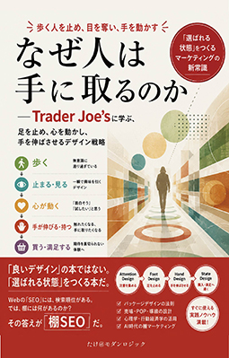

「なぜあの店は、セールもしないのに、いつも列ができるのか？」
人が「見る」から「手に取る」に変わる、その一瞬は設計できる。
あなたの商品は、品質も価格も間違っていない。それなのに、なぜか隣の商品にばかり手が伸びていく――。答えは、色でもロゴでもない。人間の「状態」を設計しているかどうかだ。
本書は、アメリカに600店舗以上を展開する人気スーパーマーケット「Trader Joe's」を教材に、人が商品を「見て」から「手に取る」までの一瞬に何が起きているのかを、Attention Design・Foot Design・Hand Design・State Designという独自の4層フレームワークで解き明かす。さらに、Webマーケティングの検索順位・CTR・CVRという構造を、リアル店舗の"棚"に応用した「棚SEO」という考え方も、本書独自の視点として体系化した。
著者：たけ＠モダンロジック ／ Kindle版 ／ 巻末付録Aは「棚SEO実践診断ツール」として無料公開中

こんな感覚、ありませんか？
「なんとなく弱い」で止まっている売場やパッケージの課題。その正体を、あなたはまだ構造の言葉にできていないだけかもしれない
品質も価格も間違っていないはずなのに、棚の上で競合に埋もれてしまう
「良いデザイン」のセンスを、社内で再現性のある言葉として説明できない
パッケージや陳列を変えるたびに、担当者の好みで議論が振り出しに戻る
売場の改善が「良くなった気がする」という感覚どまりで、数字で語れない
EC・D2Cの商品ページで、何を直せば手に取られるのかが分からない
AIを売場分析やパッケージリサーチにどう組み込めばいいのか分からない
「デザイン論」で考えるか、「状態設計論」で考えるか
美しいデザインと、手が伸びるデザインは、しばしば別物である。同じ棚でも、その違いを構造で語れる人だけが、次の一手を出せる
「美しければ売れる」という前提のまま考える（多くの現場がハマる罠）
色彩理論やレイアウトの美しさだけでは、「手が伸びる」を説明できない
- ✓「美しい=売れる」という前提から、まだ抜け出せていない
- ✓センスの良し悪しが、個人の感覚の押し付け合いになりがち
- ✓陳列やパッケージの課題を、構造の言葉で説明できない
- ✓改善のたびに、定義から議論をやり直すことになる
人が「状態」を移していく過程として設計し直す（本書のアプローチ）
歩く→足を止める→手を伸ばす→買うという状態遷移を、言語化できる原理で捉える
- ✓Attention→Foot→Hand→Stateという4層で、購買までの行動を設計する
- ✓「歩く速度を遅くする」「手を伸ばさせる」という、再現性のある原理で語る
- ✓棚の「手に取られやすさ」を、棚SEOの6要因に分解してチェックする
- ✓Webの検索順位・CTR・CVRと同じ発想を、リアル店舗の棚に応用する
4つの層で捉える、状態設計モデル
人は最初から商品を見ているのではない。歩いている。その歩行から購入までの状態遷移を、4つの層に分けて設計する
Attention Design（注意を集める）
視認距離やコントラストによって、まず買い物客の意識に入り込むための設計
Foot Design（足を止める）
色、POP、陳列、香り、照明、導線によって、歩く速度そのものを緩める設計
Hand Design（手を伸ばさせる）
色彩心理、視線の誘導、ネーミング、余白とコピーによって、手に取らせる設計
State Design（購入・満足へ導く）
手に取った後、パッケージ裏面の情報などで、購入・満足という状態まで導く設計
多くのマーケティング理論は「認知→興味→購買」で語られるが、実店舗にはその前段階として「歩く」という行為がある。この4層モデルは、店頭における最初の4秒――なぜ4秒しかないのか――から購入までを、感覚ではなく構造として設計し直すための地図である。
「棚SEO」という考え方
Webの世界には検索順位・CTR・CVRがあり、それを最適化するアルゴリズムがある。実は、リアル店舗の棚にも同じ構造が存在する
棚にも「順位」があり、それを左右する「アルゴリズム」がある――『なぜ人は手に取るのか』第5章より
視認距離
何メートル離れた地点から視認できるか。Foot Designの効果に直結する要因
フェイス数（陳列面積）
同じ商品がどれだけの幅・段数で並ぶか。視覚的な存在感と無意識の信頼につながる
陳列の高さ
目線と手の届きやすさに合った、ゴールデンゾーンに置かれているか
コントラスト設計
隣接する商品との差別化。似た配色の棚では埋没し、系統の異なる棚では際立つ
更新頻度
季節限定や新商品による「また見に来よう」という再訪動機の設計
物語性
手に取られた後、パッケージ裏面の情報が購入をどれだけ後押しできるか
この6要因は業種を問わず応用でき、食品・アパレル・日用雑貨・EC/D2Cそれぞれの重点ポイントも本書で解説する。巻末付録Aの実践チェックリストは、Webで無料公開中の診断ツールでその場でスコア化できる。
こんな方におすすめです
目次
はじめに・全7章・おわりに・巻末付録で構成
なぜ「デザイン論」ではなく「状態設計論」なのか
「感覚」から「構造」へ／Attention・Foot・Hand・State Designという4層モデル／本書の読み方
人は商品を見ていない
歩いているだけの存在／この4秒が勝負／なぜ4秒しかないのか／状態遷移として捉え直す
Trader Joe'sは何を設計しているのか
売っているのは商品ではない／SKU削減がもたらす、もう一つの効果／世界中から集めた「発見」／「買い物客」から「探検家」への状態変化
歩く速度を遅くするデザイン
「減速」という発想／色・POP・陳列・香り・照明・導線による減速／滞在時間という指標／Foot Designという概念
手に取らせるパッケージの法則
「美しい」と「触りたくなる」は別物／色彩心理／視線の誘導／ネーミングという最短の説得／Hand Designという概念
棚SEOという考え方
Webの検索順位と、棚の位置／棚の「アルゴリズム」を構成する6要因／業種別の重点ポイント／棚SEOスコアというセルフチェック
体制という設計
なぜ4,000SKU分の一貫性を保てるのか／本部は驚くほど小さい／匿名クルーによる投票／体制は真似できないのか
AI時代のパッケージデザイン
大企業だけのものではなくなる分析／中小企業が今日から始められること／操作と誘導の境界線
棚SEO実践チェックリスト／ケーススタディ／用語集
付録A：実践チェックリスト詳細版（Web診断ツール公開中）／付録B：架空ブランドで実践するケーススタディ／付録C：本書の用語集
必要なのは、もっと良いセンスではない。
「足が止まっているのか、手が伸びていないのか」を、言葉にすることである。
Trader Joe'sの商品パッケージ写真は使用しない。個別の商品名やロゴを紹介する評論本ではなく、その背後にある設計の原理を抽出することが目的だからだ。読み終えたとき、あなたの手元に残るのは「センスの良し悪し」ではなく、自社の売場とパッケージを構造の言葉で語り、改善するための一連の道具そのものである。